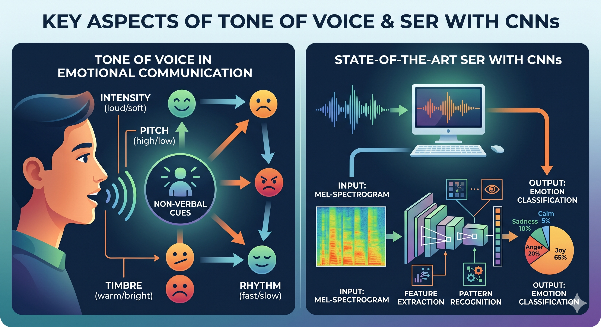

Instituto de Posgrados
Especialización en Inteligencia Artificial
Reconocimiento Emocional
por Voz en
Interfaces Adaptativas


Resultado Esperado de Aprendizaje
Al finalizar, el estudiante analiza los fundamentos y aplicaciones del reconocimiento emocional por voz mediante redes neuronales convolucionales en el contexto de la interacción humano-computador, a partir de evidencia científica reciente, evidenciado por la resolución correcta del 80% de las actividades evaluativas del ODC.
Población Objetivo
Estudiantes y profesionales de ingeniería de sistemas, inteligencia artificial y áreas afines, interesados en computación afectiva y diseño de interfaces adaptativas para HCI.
Metodología de exploración
Este ODC se recorre de forma libre y no lineal a través del menú. Cada módulo contiene textos, recursos visuales y una actividad interactiva. La evaluación final requiere 80% de aciertos para aprobar el REA.

La Brecha Emocional en la Interacción Humano-Computador
La comunicación humana es inherentemente emocional. Cuando hablamos, nuestra voz transmite mucho más que palabras: el tono, el ritmo, la intensidad y las pausas aportan información emocional significativa. Mehrabian y Wiener (1967) mostraron que, cuando el mensaje verbal contradice las señales no verbales, el tono de voz y la expresión facial pesan mucho más que las palabras en cómo el receptor interpreta el estado afectivo del hablante. Sin embargo, la mayoría de los sistemas computacionales actuales procesan únicamente el contenido semántico del habla, ignorando esta dimensión afectiva.
La computación afectiva como respuesta
La computación afectiva busca cerrar esta brecha desarrollando sistemas capaces de reconocer, interpretar y responder a las emociones humanas (Picard, 1997). El reconocimiento de emociones en el habla (SER) se ha convertido en una de sus líneas más activas, especialmente porque la voz es una modalidad natural, no invasiva y disponible en la mayoría de dispositivos (Alnuaim et al., 2022; Schuller, 2018).
Computación Afectiva
Término acuñado por Rosalind Picard (MIT, 1997). Incluye modalidades como voz, expresión facial, texto, señales fisiológicas y movimiento corporal. Hoy integra enfoques multimodales como MIST (Boitel et al., 2025), que combina texto, voz, rostro y movimiento.
🧩 Actividad
Los asistentes virtuales actuales detectan automáticamente si el usuario está frustrado y adaptan su respuesta.
El SER analiza características como tono, energía y ritmo para clasificar emociones.
La computación afectiva se limita únicamente al reconocimiento facial.

MFCC
Coeficientes cepstrales en escala Mel; simulan la percepción auditiva humana. La característica más usada en SER (Hu et al., 2025; Chowdhury et al., 2025).
Mel Spectrogram
Representación visual tiempo-frecuencia tratada como imagen 2D por las CNNs (Begazo et al., 2024).
ZCR
Tasa de cruces por cero; útil para distinguir segmentos sonoros de fricativos/ruidosos (Chowdhury et al., 2025).
Pitch / F0 y RMSE
Frecuencia fundamental y energía; emociones de alta activación (ira, alegría) tienden a mostrar F0 alto; el RMSE refleja intensidad (Kurniadi et al., 2025).
Fundamentos del Reconocimiento Emocional por Voz
El SER identifica el estado emocional de un hablante a partir de su señal de voz. A diferencia del reconocimiento de voz convencional (que transcribe palabras), el SER se enfoca en el cómo se dice algo, no en qué se dice (Schuller, 2018; Akinpelu & Viriri, 2024).
El pipeline típico sigue tres fases: adquisición de la señal, extracción de características acústicas (artesanales o aprendidas) y clasificación emocional. Los trabajos recientes combinan ambos tipos de características para mejorar robustez (Chowdhury et al., 2025; Fadhil & Zahra, 2024).
Escala Mel
El oído humano no percibe las frecuencias linealmente. La escala Mel da más resolución a frecuencias bajas (donde se concentra el habla) y menos a altas, alineando la representación con la percepción auditiva.
🧩 Relaciona cada característica
Selecciona un término y luego su descripción.

Entrada
Espectrograma Mel como matriz 2D
Convolución
Extrae patrones locales del espectrograma
Pooling
Reduce dimensionalidad manteniendo características clave
Dropout
Regularización para evitar sobreajuste
Fully Connected + Softmax
Clasificación final de emociones
Redes Neuronales Convolucionales para SER
Las CNNs, diseñadas originalmente para imágenes, son ideales para procesar espectrogramas de audio. Al convertir una señal de voz en un espectrograma Mel, la señal temporal se transforma en una imagen 2D donde el eje horizontal es el tiempo, el vertical la frecuencia y la intensidad representa la energía (Akinpelu & Viriri, 2024; Begazo et al., 2024).
Arquitecturas híbridas reportadas en la literatura
CNN-LSTM
96.5% accuracy en RAVDESS (Bhanbhro et al., 2025); variantes hasta 90.10% con múltiples features (Fadhil & Zahra, 2024)
CNN-BiLSTM + Atención
98.1% accuracy en RAVDESS; la ablación muestra que quitar BiLSTM baja la exactitud a 89% (Bhanbhro et al., 2025)
CNN + Transformer (dual-branch con wav2vec 2.0)
92.7% accuracy en RAVDESS combinando rama espectrograma y rama wav2vec 2.0 (Wei et al., 2025); 94.85% con MHCT (Ullah et al., 2023)
CapsNet + CBAM
98.57% en RAVDESS, 98% en TESS con redes cápsula y atención espacial/canal (Barsainyan & Singh, 2024)
Transformer y wav2vec 2.0
Arquitectura basada en auto-atención que procesa secuencias completas en paralelo. wav2vec 2.0 aprende representaciones del habla de forma auto-supervisada y se usa como extractor de características preentrenado en SER (Wei et al., 2025; Ortega-Beltrán et al., 2026).
🧩 Ordena las capas de una CNN
Arrastra las capas para ordenarlas de entrada a salida.

Fusión Temprana (feature-level)
Stack optimizado de múltiples características: 90.10% en RAVDESS, superando línea base humana de ~65.8% (Fadhil & Zahra, 2024)
Fusión Tardía (decision-level)
Ensemble CNN + CNN-BiLSTM por promedio de probabilidades: 97.57% RAVDESS, 100% TESS (Chowdhury et al., 2025)
Fusión Híbrida con Atención
Prosodic-spatiotemporal + atención: 97.64% accuracy (Nugroho et al., 2025); CNN-1D + CNN-2D + MLP: 96-97% WA (Begazo et al., 2024)
Multi-rama (multi-branch)
SCAR-NET con atención de canal y espacial mejora consistentemente sobre modelos de una sola rama (Mao et al., 2023); ensemble en bangla con feature fusion multi-stream (Shakil et al., 2025)
Fusión de Características y Estrategias Ensemble
Una sola característica acústica rara vez captura toda la complejidad emocional. La fusión de múltiples características y la combinación de modelos permiten capturar información complementaria, mejorando precisión y robustez (Manolekshmi & Mukunthan, 2025; Mao et al., 2023).
Tipos de fusión
Temprana (feature-level): combina características en un vector único antes de clasificar (Fadhil & Zahra, 2024).
Tardía (decision-level): cada modelo predice independientemente y se combinan por votación o promedio de probabilidades (Chowdhury et al., 2025).
Híbrida con atención: usa mecanismos de atención para ponderar representaciones de múltiples espectrogramas o modalidades (Nugroho et al., 2025; Begazo et al., 2024).
Soft vs Hard Voting
Hard: vota por mayoría de clases. Soft: promedia probabilidades — normalmente más preciso porque aprovecha la confianza de cada modelo (Chowdhury et al., 2025).
🧩 Identifica el tipo de fusión
Dos CNNs independientes sobre MFCCs y espectrogramas. Se promedian sus probabilidades de salida.
Se concatenan MFCC + ZCR + RMSE en un vector único y se pasa a una CNN.

E-learning adaptativo
Detecta frustración y ajusta ritmo o dificultad (Alnuaim et al., 2022)
Call centers y servicio
Alerta al agente cuando detecta enojo del cliente; aplicaciones en tiempo real (Badawood & Aldosari, 2024)
Asistentes empáticos
Adaptan tono según la emoción detectada, favoreciendo HCI más natural (Alnuaim et al., 2022)
Salud y seguimiento
Monitoreo emocional multimodal en contextos clínicos (Mostert et al., 2025); terapia y bienestar
Multilingüe / low-resource
SER en español e italiano (Ortega-Beltrán et al., 2026); árabe (Alnuaim et al., 2022); coreano (Jo & Kwak, 2023); bangla (Shakil et al., 2025)
Sistemas sensibles al usuario
Adaptación por género y perfil del hablante mejora la precisión (Hu et al., 2025; Kurniadi et al., 2025)
Aplicaciones de SER en la Interacción Humano-Computador
Una interfaz adaptativa emocional detecta el estado del usuario en tiempo real y modifica su comportamiento, contenido o presentación en respuesta. La voz es una modalidad natural, no invasiva y disponible en la mayoría de dispositivos, lo que la hace especialmente atractiva para HCI (Alnuaim et al., 2022; Schuller, 2018).
Hu et al. (2025) desarrollaron un framework sensible al género que alcanzó 89.5% de accuracy general, con 92% en voces femeninas y 87% en masculinas, evidenciando la importancia de adaptar el sistema al perfil del usuario. En paralelo, Ortega-Beltrán et al. (2026) muestran que los modelos SOTA (wav2vec 2.0, DS-AM) generalizan a idiomas romances frecuentemente subrepresentados como el español y el italiano, y trabajos como Jo & Kwak (2023) confirman la transferibilidad a otros idiomas (coreano) mediante modelos two-stream.
🧩 Caso breve
Una universidad implementará e-learning emocional. ¿Qué componente es MÁS crítico primero?

Actuado vs. Espontáneo
Actuado: actores interpretan emociones; etiquetas claras pero pueden resultar artificiales. Espontáneo: interacciones reales; más ecológico pero difícil de etiquetar. IEMOCAP incluye tanto escenarios guionizados como improvisados, lo que explica su popularidad (Busso et al., 2008).
Estado del Arte: Datasets y Tendencias
Métricas de evaluación
Tendencias observadas en la matriz de revisión
Dal Rí et al. (2023) ilustra la dificultad de generalización entre datasets: accuracies de 83% (RAVDESS), 100% (TESS), 68% (CREMA-D) y 63% (IEMOCAP) con un mismo modelo, lo que revela fuertes sesgos por dataset. Las características artesanales bien seleccionadas (MFCC + ZCR + RMSE + Chroma) siguen siendo altamente competitivas frente a espectrogramas (Chowdhury et al., 2025), mientras que los modelos basados en Transformers y wav2vec 2.0 muestran resultados robustos en escenarios multilingües (Wei et al., 2025; Ortega-Beltrán et al., 2026). El aumento de datos y la optimización bioinspirada (Grey Wolf Optimization) mejoran la robustez: GWO-K-SVM elevó hasta 30% la accuracy en EMO-DB y RAVDESS (Tyagi & Szénási, 2024). Schmitt, Cummins & Schuller (2019) muestran además que las CNN sin recurrencia pueden igualar o superar a modelos RNN/LSTM en reconocimiento emocional continuo.
🧩 Selección múltiple
¿Cuál dataset incluye tanto guiones escritos como improvisaciones diádicas entre actores?
Según Dal Rí et al. (2023), ¿qué evidencia es clave en la validación cruzada entre datasets?
Evaluación Final
8 preguntas · necesitas 80% (6/8) para aprobar
Pregunta 1 de 8
¿Cuál es el objetivo principal del Speech Emotion Recognition (SER)?
Pregunta 2 de 8
Los MFCC son ampliamente usados en SER porque:
Pregunta 3 de 8
¿Cuál es la función principal de las capas convolucionales en una CNN para SER?
Pregunta 4 de 8
¿Qué ventaja aporta un modelo híbrido CNN-BiLSTM con atención frente a una CNN sola (Bhanbhro et al., 2025)?
Pregunta 5 de 8
En la fusión tardía, ¿en qué momento se combinan las fuentes de información?
Pregunta 6 de 8
¿Cuál es una aplicación directa de SER en e-learning?
Pregunta 7 de 8
Según Busso et al. (2008), ¿por qué IEMOCAP es valorado en la investigación?
Pregunta 8 de 8
Según Dal Rí et al. (2023), ¿qué observación es correcta sobre la generalización en SER?
Conclusión
Sobre el proceso de desarrollo del ODC
El diseño de este ODC permitió sintetizar y estructurar la evidencia científica reciente sobre SER con CNNs en un formato interactivo y accesible, integrando rigor académico (30 artículos revisados en matriz PRISMA) con experiencias de aprendizaje significativas.
Sobre la especialización
La Especialización en IA de la Universidad de Cundinamarca proporcionó las competencias para abordar la intersección del procesamiento de señales, el deep learning y la HCI, con aplicabilidad directa al diseño de sistemas inteligentes reales.
Sobre el reconocimiento emocional por voz
Las arquitecturas híbridas (CNN-LSTM, CNN-BiLSTM con atención, CNN-Transformer con wav2vec 2.0, CapsNet-CBAM) han reportado precisiones superiores al 90% en varios datasets de referencia (Bhanbhro et al., 2025; Wei et al., 2025; Barsainyan & Singh, 2024). La combinación de características artesanales con representaciones aprendidas sigue siendo el enfoque más robusto disponible (Chowdhury et al., 2025; Fadhil & Zahra, 2024).
Sobre interfaces adaptativas y HCI
La integración de SER en interfaces adaptativas puede transformar la HCI, pero persisten desafíos: generalización entre datasets e idiomas (Dal Rí et al., 2023; Ortega-Beltrán et al., 2026), rendimiento en condiciones ruidosas y consideraciones éticas sobre privacidad emocional.
Siguientes pasos
Referencias
Formato APA 7 · Matriz de revisión sistemática (30 artículos) + fuentes fundacionales
Matriz de revisión de literatura (PRISMA, 30 artículos)
Fuentes fundacionales y de datasets (externas a la matriz)
Créditos y Metadatos
Metadatos del ODC
| Área de conocimiento | Inteligencia Artificial · Interacción Humano-Computador |
| Nombre del material | Reconocimiento Emocional por Voz en Interfaces Adaptativas |
| Autores | Yow Nicolás Guacaneme Molano · Miguel Angel Pardo López |
| Diseño y desarrollo | Yow Nicolás Guacaneme Molano |
| Tutoría | Jhondert Alberto Jaimes Rodriguez |
| Imágenes | Pendiente de completar |
| Sonidos y voces | Pendiente de completar |
| Fecha de creación | 2026 |
| Nivel educativo | Alto (Posgrado / Especialización) |
| Institución | Universidad de Cundinamarca |
Programa académico
Especialización en Inteligencia Artificial
Instituto de Posgrados
Universidad de Cundinamarca · 2026
Número de pantalla
13
Pantalla final del ODC

Los RED producidos bajo la supervisión de la Oficina de Educación Virtual y a Distancia de la Universidad de Cundinamarca cuentan con licencia Creative Commons CC BY-NC-SA 4.0. Usted es libre de compartir y adaptar este material con atribución y bajo la misma licencia.